Unit 15
Polymers
Objectives
After studying this Unit, you will be able to
- explain the terms - monomer, polymer and polymerisation and appreciate their importance;
- distinguish between various classes of polymers and different types of polymerisation processes;
- appreciate the formation of polymers from mono- and bifunctional monomer molecules;
- describe the preparation of some important synthetic polymers and their properties;
- appreciate the importance of polymers in daily life.
"Copolymerisation has been used by nature in polypeptides which may contain as many as 20 different amino acids. Chemists are still far behind".
Do you think that daily life would have been easier and colourful without the discovery and varied applications of polymers? The use of polymers in the manufacture of plastic buckets, cups and saucers, children's toys, packaging bags, synthetic clothing materials, automobile tyres, gears and seals, electrical insulating materials and machine parts has completely revolutionised the daily life as well as the industrial scenario. Indeed, the polymers are the backbone of four major industries viz. plastics, elastomers, fibres and paints and varnishes.
The word 'polymer' is coined from two Greek words: poly means many and mer means unit or part. The term polymer is defined as very large molecules having high molecular mass (103-107u). These are also referred to as macromolecules, which are formed by joining of repeating structural units on a large scale. The repeating structural units are derived from some simple and reactive molecules known as monomers and are linked to each other by covalent bonds. This process of formation of polymers from respective monomers is called polymerisation. The transformation of ethene to polythene and interaction of hexamethylene diamine and adipic acid leading to the formation of Nylon 6, 6 are examples of two different types of polymerisation reactions.
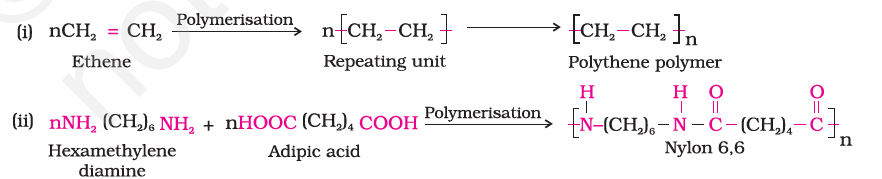
15.1 Classification of Polymers
There are several ways of classification of polymers based on some special considerations. The following are some of the common classifications of polymers:
15.1.1 Classification Based on Source
Under this type of classification, there are three sub categories.
1. Natural polymers
These polymers are found in plants and animals. Examples are proteins, cellulose, starch, some resins and rubber.
2. Semi-synthetic polymers
Cellulose derivatives as cellulose acetate (rayon) and cellulose nitrate, etc. are the usual examples of this sub category.
3. Synthetic polymers
A variety of synthetic polymers as plastic (polythene), synthetic fibres (nylon 6,6) and synthetic rubbers (Buna - S) are examples of manmade polymers extensively used in daily life as well as in industry.
15.1.2 Classification Based on Structure of Polymers
There are three different types based on the structure of the polymers.
1. Linear polymers
These polymers consist of long and straight chains. The examples are high density polythene, polyvinyl chloride, etc. These are represented as:
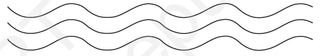
2. Branched chain polymers
These polymers contain linear chains having some branches, e.g., low density polythene. These are depicted as follows:
3. Cross linked or Network polymers
These are usually formed from bi-functional and tri-functional monomers and contain strong covalent bonds between various linear polymer chains, e.g. bakelite, melamine, etc. These polymers are depicted as follows:

15.1.3 Classification Based on Mode of Polymerisation
Polymers can also be classified on the basis of mode of polymerisation into two sub groups.
1. Addition polymers
The addition polymers are formed by the repeated addition of monomer molecules possessing double or triple bonds, e.g., the formation of polythene from ethene and polypropene from propene. However, the addition polymers formed by the polymerisation of a single monomeric species are known as homopolymers, e.g., polythene.
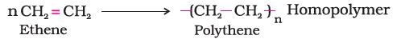
The polymers made by addition polymerisation from two different monomers are termed as copolymers, e.g., Buna-S, Buna-N, etc.

2. Condensation polymers
The condensation polymers are formed by repeated condensation reaction between two different bi-functional or tri-functional monomeric units. In these polymerisation reactions, the elimination of small molecules such as water, alcohol, hydrogen chloride, etc. take place. The examples are terylene (dacron), nylon 6, 6, nylon 6, etc. For example, nylon 6, 6 is formed by the condensation of hexamethylene diamine with adipic acid.

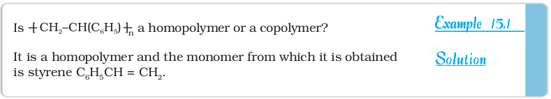
15.1.4 Classification Based on Molecular Forces
A large number of polymer applications in different fields depend on their unique mechanical properties like tensile strength, elasticity, toughness, etc. These mechanical properties are governed by intermolecular forces, e.g., van der Waals forces and hydrogen bonds, present in the polymer. These forces also bind the polymer chains. Under this category, the polymers are classified into the following four sub groups on the basis of magnitude of intermolecular forces present in them.
1. Elastomers
These are rubber – like solids with elastic properties. In these elastomeric polymers, the polymer chains are held together by the weakest intermolecular forces. These weak binding forces permit the polymer to be stretched. A few 'crosslinks' are introduced in between the chains, which help the polymer to retract to its original position after the force is released as in vulcanised rubber. The examples are buna-S, buna-N, neoprene, etc.
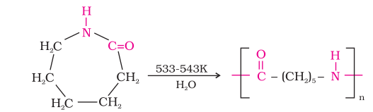
2. Fibres
Fibres are the thread forming solids which possess high tensile strength and high modulus. These characteristics can be attributed to the strong intermolecular forces like hydrogen bonding. These strong forces also lead to close packing of chains and thus impart crystalline nature. The examples are polyamides (nylon 6, 6), polyesters (terylene), etc.

3. Thermoplastic polymers
These are the linear or slightly branched long chain molecules capable of repeatedly softening on heating and hardening on cooling. These polymers possess intermolecular forces of attraction intermediate between elastomers and fibres. Some common thermoplastics are polythene, polystyrene, polyvinyls, etc.
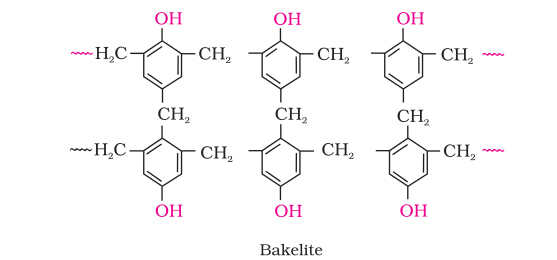
4 Thermosetting polymers
These polymers are cross linked or heavily branched molecules, which on heating undergo extensive cross linking in moulds and again become infusible. These cannot be reused. Some common examples are bakelite, urea-formaldelyde resins, etc.

15.2 Types of Polymerisation Reactions
There are two broad types of polymerisation reactions, i.e., the addition or chain growth polymerisation and condensation or step growth polymerisation.
15.2.1 Addition Polymerisation or Chain Growth Polymerisation
In this type of polymerisation, the molecules of the same monomer or diferent monomers add together on a large scale to form a polymer. The monomers used are unsaturated compounds, e.g., alkenes, alkadienes and their derivatives. This mode of polymerisation leading to an increase in chain length or chain growth can take place through the formation of either free radicals or ionic species. However, the free radical governed addition or chain growth polymerisation is the most common mode.
1. Free radical mechanism
A variety of alkenes or dienes and their derivatives are polymerised in the presence of a free radical generating initiator (catalyst) like benzoyl peroxide, acetyl peroxide, tert-butyl peroxide, etc. For example, the polymerisation of ethene to polythene consists of heating or exposing to light a mixture of ethene with a small amount of benzoyl peroxide initiator. The process starts with the addition of phenyl free radical formed by the peroxide to the ethene double bond thus generating a new and larger free radical. This step is called chain initiating step. As this radical reacts with another molecule of ethene, another bigger sized radical is formed. The repetition of this sequence with new and bigger radicals carries the reaction forward and the step is termed as chain propagating step. Ultimately, at some stage the product radical thus formed reacts with another radical to form the polymerised product. This step is called the chain terminating step. The sequence of steps may be depicted as follows:
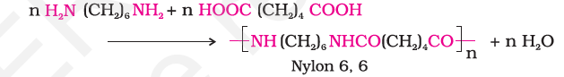
For termination of the long chain, these free radicals can combine in different ways to form polythene. One mode of termination of chain is shown as under:
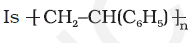
2 Preparation of some important addition polymers
(a) Polythene
There are two types of polythene as given below:
(i) Low density polythene: It is obtained by the polymerisation of ethene under high pressure of 1000 to 2000 atmospheres at a temperature of 350 K to 570 K in the presence of traces of dioxygen or a peroxide initiator (catalyst). The low density polythene (LDP) obtained through the free radical addition and H-atom abstraction has highly branched structure. Low density polythene is chemically inert and tough but flexible and a poor conductor of electricity. Hence, it is used in the insulation of electricity carrying wires and manufacture of squeeze bottles, toys and flexible pipes.
G. Natta of Imperia and Karl Ziegler of Germany were awarded the Nobel Prize for Chemistry in 1963 for the development of Ziegler-Natta catalyst.
(ii) High density polythene: It is formed when addition polymerisation of ethene takes place in a hydrocarbon solvent in the presence of a catalyst such as triethylaluminium and titanium tetrachloride (Ziegler-Natta catalyst) at a temperature of 333 K to 343 K and under a pressure of 6-7 atmospheres.
High density polythene (HDP) thus produced, consists of linear molecules and has a high density due to close packing. It is also chemically inert and more tough and hard. It is used for manufacturing buckets, dustbins, bottles, pipes, etc.
(b) Polytetrafluoroethene (Teflon)
Teflon is manufactured by heating tetrafluoroethene with a free radical or persulphate catalyst at high pressures. It is chemically inert and resistant to attack by corrosive reagents. It is used in making oil seals and gaskets and also used for non – stick surface coated utensils.
Teflon coatings undergo decomposition at temperatures above 300°C.
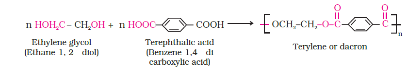
(c) Polyacrylonitrile
The addition polymerisation of acrylonitrile in presence of a peroxide catalyst leads to the formation of polyacrylonitrile.
Acrylic fibres have good resistance to stains, chemicals, insects and fungi.
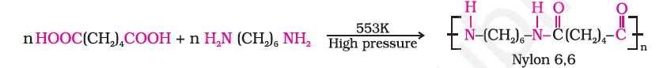
Polyacrylonitrile is used as a substitute for wool in making commercial fibres as orlon or acrilan.
15.2.2 Condensation Polymerisation or Step Growth polymerisation
This type of polymerisation generally involves a repetitive condensation reaction between two bi-functional monomers. These polycondensation reactions may result in the loss of some simple molecules as water, alcohol, etc., and lead to the formation of high molecular mass condensation polymers.
In these reactions, the product of each step is again a bi-functional species and the sequence of condensation goes on. Since, each step produces a distinct functionalised species and is independent of each other, this process is also called as step growth polymerisation.
The formation of terylene or dacron by the interaction of ethylene glycol and terephthalic acid is an example of this type of polymerisation.

Some important condensation polymerisation reactions characterised by their linking units are described below:
1. Polyamides
These polymers possessing amide linkages are important examples of synthetic fibres and are termed as nylons. The general method of preparation consists of the condensation polymerisation of diamines with dicarboxylic acids and also of amino acids and their lactams.
Preparation of nylons
(i) Nylon 6,6: It is prepared by the condensation polymerisation of hexamethylenediamine with adipic acid under high pressure and at high temperature.
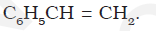
Nylon 6, 6 is used in making sheets, bristles for brushes and in textile industry.
(ii) Nylon 6: It is obtained by heating caprolactum with water at a high temperature.

Nylon 6 is used for the manufacture of tyre cords, fabrics and ropes.
2. Polyesters
These are the polycondensation products of dicarboxylic acids and diols. Dacron or terylene is the best known example of polyesters. It is manufactured by heating a mixture of ethylene glycol and terephthalic acid at 420 to 460 K in the presence of zinc acetateantimony trioxide catalyst as per the reaction given earlier. Dacron fibre (terylene) is crease resistant and is used in blending with cotton and wool fibres and also as glass reinforcing materials in safety helmets, etc.
3. Phenol - formaldehyde polymer (Bakelite and related polymers) Phenol - formaldehyde polymers are the oldest synthetic polymers. These are obtained by the condensation reaction of phenol with formaldehyde in the presence of either an acid or a base catalyst. The reaction starts with the initial formation of o-and/or p-hydroxymethylphenol derivatives, which further react with phenol to form compounds having rings joined to each other through –CH2 groups. The initial product could be a linear product – Novolac used in paints.
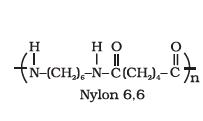
Novolac on heating with formaldehyde undergoes cross linking to form an infusible solid mass called bakelite. It is used for making combs, phonograph records, electrical switches and handles of various utensils.

4. Melamine – formaldehyde polymer
Melamine formaldehyde polymer is formed by the condensation polymerisation of melamine and formaldehyde.
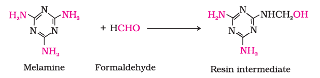
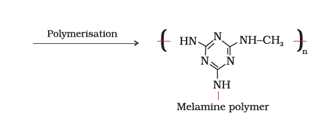
Intext Questions
15.3 Write the names of monomers of the following polymers:
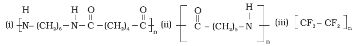
15.4 Classify the following as addition and condensation polymers: Terylene, Bakelite, Polyvinyl chloride, Polythene.
15.2.3 Copolymerisation
Copolymerisation is a polymerisation reaction in which a mixture of more than one monomeric species is allowed to polymerise and form a copolymer. The copolymer can be made not only by chain growth polymerisation but by step growth polymerisation also. It contains multiple units of each monomer used in the same polymeric chain. For example, a mixture of 1, 3 – butadiene and styrene can form a copolymer.
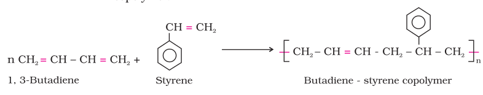
Copolymers have properties quite different from homopolymers. For example, butadiene - styrene copolymer is quite tough and is a good substitute for natural rubber. It is used for the manufacture of autotyres, floortiles, footwear components, cable insulation, etc.
15.2.4 Rubber
1. Natural rubber
Rubber is a natural polymer and possesses elastic properties. It is also termed as elastomer and has a variety of uses. It is manufactured from rubber latex which is a colloidal dispersion of rubber in water. This latex is obtained from the bark of rubber tree and is found in India, Srilanka, Indonesia, Malaysia and South America.
Natural rubber may be considered as a linear polymer of isoprene (2-methyl-1, 3-butadiene) and is also called as cis - 1, 4 - polyisoprene.
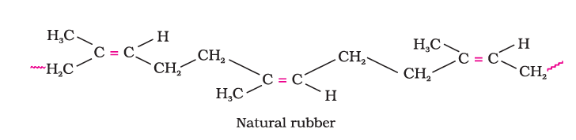
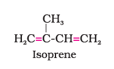
The cis-polyisoprene molecule consists of various chains held together by weak van der Waals interactions and has a coiled structure. Thus, it can be stretched like a spring and exhibits elastic properties.
Vulcanisation of rubber: Natural rubber becomes soft at high temperature (>335 K) and brittle at low temperatures (<283 K) and shows high water absorption capacity. It is soluble in non-polar solvents and is non-resistant to attack by oxidising agents. To improve upon these physical properties, a process of vulcanisation is carried out. This process consists of heating a mixture of raw rubber with sulphur and an appropriate additive at a temperature range between 373 K to 415 K. On vulcanisation, sulphur forms cross links at the reactive sites of double bonds and thus the rubber gets stiffened.
In the manufacture of tyre rubber, 5% of sulphur is used as a crosslinking agent. The probable structures of vulcanised rubber molecules are depicted below:
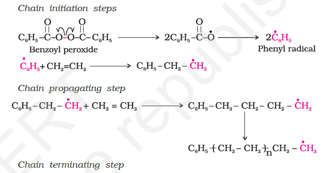
2. Synthetic rubbers
Synthetic rubber is any vulcanisable rubber like polymer, which is capable of getting stretched to twice its length. However, it returns to its original shape and size as soon as the external stretching force is released. Thus, synthetic rubbers are either homopolymers of 1, 3 - butadiene derivatives or copolymers of 1, 3 - butadiene or its derivatives with another unsaturated monomer.
Preparation of Synthetic Rubbers
1. Neoprene
Neoprene or polychloroprene is formed by the free radical polymerisation of chloroprene.
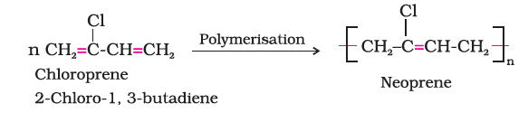
It has superior resistance to vegetable and mineral oils. It is used for manufacturing conveyor belts, gaskets and hoses.
2. Buna – N
You have already studied about Buna-S, in Section 15.1.3. Buna –N is obtained by the copolymerisation of 1, 3 – butadiene and acrylonitrile in the presence of a peroxide catalyst.
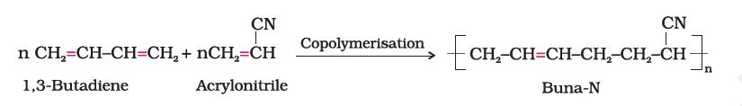
It is resistant to the action of petrol, lubricating oil and organic solvents. It is used in making oil seals, tank lining, etc.
Intext Questions
15.5 Explain the difference between Buna-N and Buna-S.
15.6 Arrange the following polymers in increasing order of their intermolecular forces.
(i) Nylon 6,6, Buna-S, Polythene.
(ii) Nylon 6, Neoprene, Polyvinyl chloride.
15.3 Molecular Mass of Polymers
Polymer properties are closely related to their molecular mass, size and structure. The growth of the polymer chain during their synthesis is dependent upon the availability of the monomers in the reaction mixture. Thus, the polymer sample contains chains of varying lengths and hence its molecular mass is always expressed as an average. The molecular mass of polymers can be determined by chemical and physical methods.
15.4 Biodegradable Polymers
A large number of polymers are quite resistant to the environmental degradation processes and are thus responsible for the accumulation of polymeric solid waste materials. These solid wastes cause acute environmental problems and remain undegraded for quite a long time. In view of the general awareness and concern for the problems created by the polymeric solid wastes, certain new biodegradable synthetic polymers have been designed and developed. These polymers contain functional groups similar to the functional groups present in biopolymers.
Aliphatic polyesters are one of the important classes of biodegradable polymers. Some important examples are given below:
1. Poly β-hydroxybutyrate – co-β-hydroxy valerate (PHBV)
It is obtained by the copolymerisation of 3-hydroxybutanoic acid and 3 - hydroxypentanoic acid. PHBV is used in speciality packaging, orthopaedic devices and in controlled release of drugs. PHBV undergoes bacterial degradation in the environment.
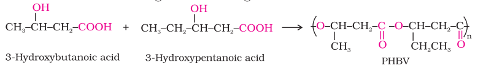
2. Nylon 2–nylon 6
It is an alternating polyamide copolymer of glycine (H2N–CH2–COOH) and amino caproic acid [H2N (CH2)5 COOH] and is biodegradable. Can you write the structure of this copolymer?
15.5 Polymers of Commercial Importance
Besides, the polymers already discussed, some other commercially important polymers along with their structures and uses are given below in Table 15.1.
Table 15.1: Some Other Commercially Important Polymers
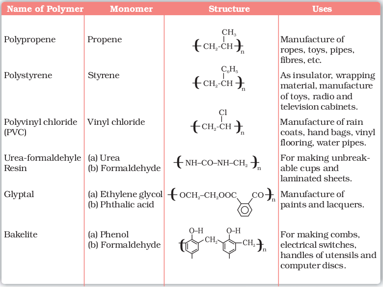
SUMMARY
Polymers are defined as high molecular mass macromolecules, which consist of repeating structural units derived from the corresponding monomers. These polymers may be of natural or synthetic origin and are classified in a number of ways.
In the presence of an organic peroxide initiator, the alkenes and their derivatives undergo addition polymerisation or chain growth polymerisation through a free radical mechanism. Polythene, teflon, orlon, etc. are formed by addition polymerisation of an appropriate alkene or its derivative. Condensation polymerisation reactions are shown by the interaction of bi – or poly functional monomers containing – NH2, – OH and – COOH groups. This type of polymerisation proceeds through the elimination of certain simple molecules as H2O, CH3OH, etc. Formaldehyde reacts with phenol and melamine to form the corresponding condensation polymer products. The condensation polymerisation progresses through step by step and is also called as step growth polymerisation. Nylon, bakelite and dacron are some of the important examples of condensation polymers. However, a mixture of two unsaturated monomers exhibits copolymerisation and forms a co-polymer containing multiple units of each monomer. Natural rubber is a cis 1, 4-polyisoprene and can be made more tough by the process of vulcanisation with sulphur. Synthetic rubbers are usually obtained by copolymerisation of alkene and 1, 3 butadiene derivatives.
In view of the potential environmental hazards of synthetic polymeric wastes, certain biodegradable polymers such as PHBV and Nylon-2- Nylon-6 are developed as alternatives.
EXERCISES
15.1 Explain the terms polymer and monomer.
15.2 What are natural and synthetic polymers? Give two examples of each type.
15.3 Distinguish between the terms homopolymer and copolymer and give an example of each.
15.4 How do you explain the functionality of a monomer?
15.5 Define the term polymerisation.
15.6 Is ( NH-CHR-CO )n, a homopolymer or copolymer?
15.7 In which classes, the polymers are classified on the basis of molecular forces?
15.8 How can you differentiate between addition and condensation polymerisation?
15.9 Explain the term copolymerisation and give two examples.
15.10 Write the free radical mechanism for the polymerisation of ethene.
15.11 Define thermoplastics and thermosetting polymers with two examples of each.
15.12 Write the monomers used for getting the following polymers.
(i) Polyvinyl chloride (ii) Teflon (iii) Bakelite
15.13 Write the name and structure of one of the common initiators used in free radical addition polymerisation.
15.14 How does the presence of double bonds in rubber molecules influence their structure and reactivity?
15.15 Discuss the main purpose of vulcanisation of rubber.
15.16 What are the monomeric repeating units of Nylon-6 and Nylon-6,6?
15.17 Write the names and structures of the monomers of the following polymers:
(i) Buna-S (ii) Buna-N (iii) Dacron (iv) Neoprene
15.18 Identify the monomer in the following polymeric structures.


15.19 How is dacron obtained from ethylene glycol and terephthalic acid ?
15.20 What is a biodegradable polymer ? Give an example of a biodegradable aliphatic polyester.
Answers of Some Intext Questions
15.1 Polymers are high molecular mass substances consisting of large numbers of repeating structural units. They are also called as macromolecules. Some examples of polymers are polythene, bakelite, rubber, nylon 6, 6, etc.
15.2 On the basis of structure, the polymers are classified as below:
(i) Linear polymers such as polythene, polyvinyl chloride, etc.
(ii) Branched chain polymers such as low density polythene.
(iii) Cross linked polymers such as bakelite, melamine, etc.
15.3 (i) Hexamethylene diamine and adipic acid.
(ii) Caprolactam.
(iii) Tetrafluoroethene.
15.4 Addition polymers: Polyvinyl chloride, Polythene. Condensation polymers: Terylene, Bakelite.
15.5 Buna-N is a copolymer of 1,3-butadiene and acrylonitrile and Buna-S is a copolymer of 1,3-butadiene and styrene.
15.6 In order of increasing intermolecular forces.
(i) Buna-S, Polythene, Nylon 6,6.
(ii) Neoprene, Polyvinyl chloride, Nylon 6.